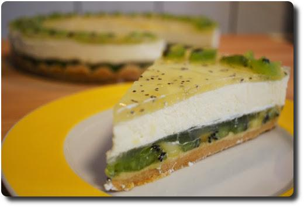
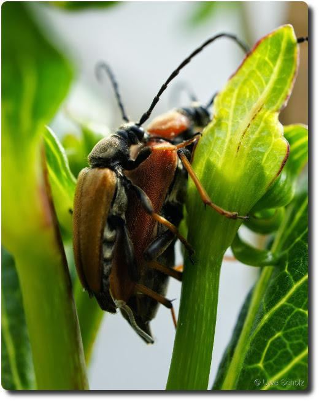

Hallo Nikola
Hallo Welt, hallo Nikola!
Hallo Welt, hallo Nikola!
Wir hatten übers Wochenende Besuch bekommen. Schnell musste etwas tolles zum Kaffee gezaubert werden. Ich hab' mich für ein Tortenezept aus unserem "Backen ohne Backen" Buch entschieden.
Die Torte war lecker und hat wegen dem Limettensaft eine leicht saure Note. Das Rezept gibt's auf Anfrage. :-)
Nach langer Treue hast du dein Leben ausgehaucht. Mit dir habe ich meine ersten Erfahrungen mit Linux gesammelt, wir haben zusammen meine Diplomarbeit geschrieben, mit Freunden gechattet, Lösungen für Hausaufgaben im Studium gesucht, knifflige Programmieraufgaben gelöst und viele tolle Stunden Civilzation zusammen gespielt.
In Erinnerung wird mir bleiben, wie ich mir blutige Kratzer an deinem Innenleben geholt habe, als ich deinen kleinen Kühlkörper durch einen größeren ersetzt habe. Auch andere Operationen waren manchmal schwer, aber wir haben es immer beide überstanden. Leider konnte ich dir zuletzt aber nicht mehr helfen...
Inzwischen wurdest Du durch ein ein kleines, verschlossenes 08/15 Notebook ersetzt. Du wirst mir fehlen!!! Möge deine Chips und Speicher in Frieden ruhen.

Ich bin ja ein eifriger Zeitungsleser. Dabei kann ich mich irgendwie besser auf Artikel konzentieren, als beim Lesen von langatmigen Blogs und Internet-Artikeln. Über die Vielfalt der Beiträge bekomme ich ein gutes Bild darüber, was in der Welt und meiner Umgebung passiert. Nicht vollständig, aber schon umfassend. So. Und was macht man mit den Zeitungen, wenn sie durchgelesen sind?
In flagranti - ein Pärchen Scharlachroter Feuerkäfer.
Der Anteil der Lebensmittel, die per Lkw, Schiff oder Flugzeug Hunderte oder Tausende Kilometer oder sogar um den halben Globus transportiert werden, um dann in deutschen Geschäften im Regal zu landen, wächst rasant – und damit auch die Umweltbelastung durch die Transporte.
http://www.fr.de/wirtschaft/oekologie-lebensmittel-reisen-immer-weiter-a-576171
Gerade habe ich mal nach Primzahlen gestöbert. Die derzeit größte bekannte ist $2^{57885161}-1$, eine Mersenne-Primzahl der Form $(2^n-1)$. Unter diesem Link kann man sich einen Teil dieser riesigen Zahl anschauen. Einen Teil nur deswegen, weil die vollständige Zahl etwa 22,5MB groß ist - sie besitzt fast 17,5 millionen Stellen.
Zutaten
Zubereitung
Umrühren, fertig. Hab ich eben gemacht und freue mich schon auf das morgige Frühstück. Und wenn's die Radieschen aus dem eigenen Garten sind, dann schmeckt's sicher gleich nochmal so gut. :-)

Dieses Jahr hat es unser Bienenfreund ("Phacelia") sehr leicht gehabt, denn der milde Winter hat die Samen aus dem letzten Jahr verschont. So steht er jetzt schon seit Anfang Mai in voller Blüte und bietet Nahrung für unsere kleinen fliegenden Besucher.


Ein Nachtkonzert zu später Stunde. Man höre und staune :-)